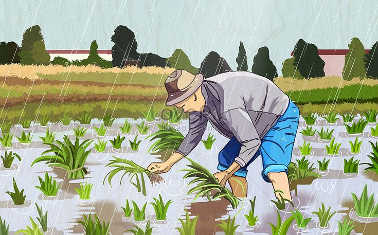
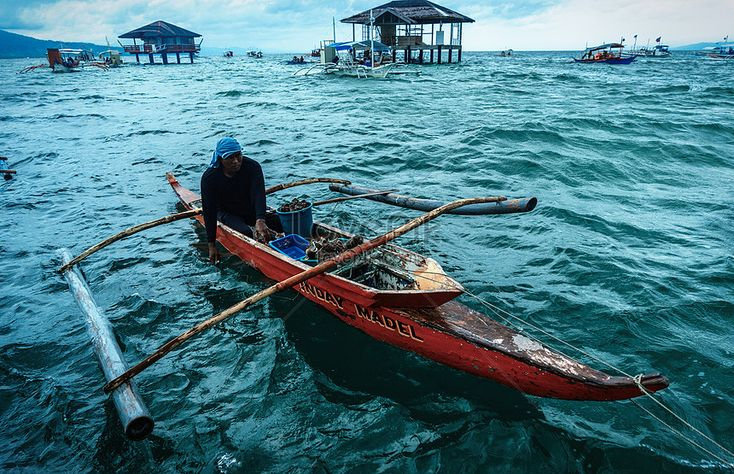
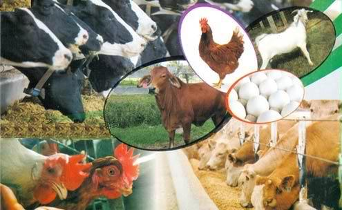
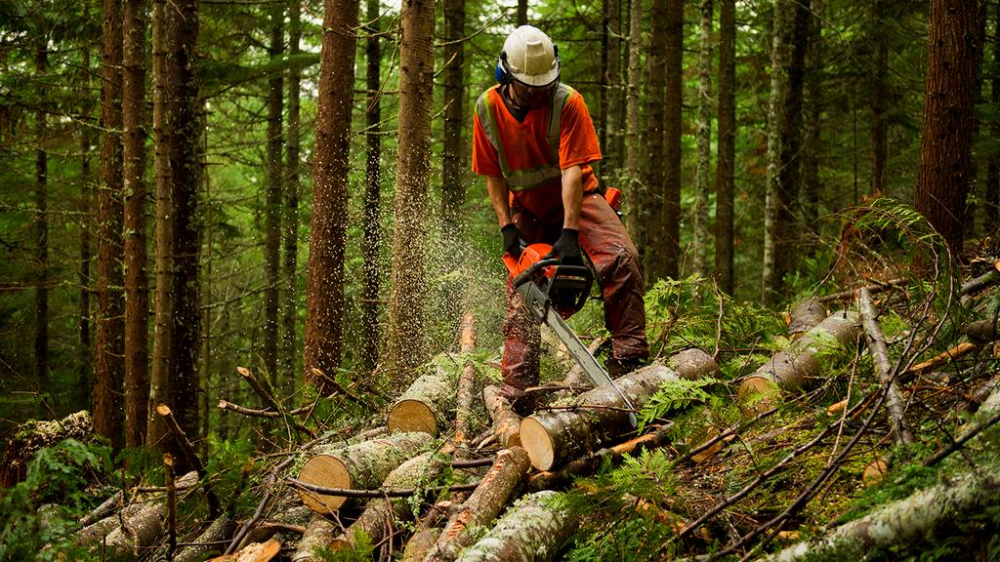

Sagutan ang aktibidad upang mabuksan ang Lesson 2.




Ang agrikultura ay agham at sining ng pagpaparami ng halaman at hayop. Ito ay mahalagang sektor na nagbibigay pagkain at hanapbuhay sa maraming Pilipino.
Pagsasaka: Pangunahing pananim: palay, mais, niyog, tubo, saging, pinya, at iba pa na karaniwang kinokonsumo sa loob at labas ng bansa.
Kita mula sa pagsasaka: ₱797.731 bilyon.
Pangingisda: Nauuri sa tatlo: komersiyal, munisipal, at aquaculture.
Bahagi rin ang panghuhuli ng hipon at sugpo.
Paghahayupan: Pag-aalaga ng mga hayop para sa karne, hibla, gatas, itlog, at iba pa.
Kasama rito ang pang-araw-araw na pangangalaga, pagpili ng pag-aanak, at pagpapalaki ng mga hayop.
Paggugubat: Patuloy na nililinang ang kagubatan sa kabila ng pagkaubos ng yaman nito.
Pinagkukunan ng plywood, tabla, troso, veneer, rattan, nipa, anahaw, kawayan, at iba pa.
Pinagmumulan ng pagkain.
Pinagkukunan ng hilaw na materyales upang makabuo ng panibagong produkto.
Nagkakaloob ng trabaho sa maraming Pilipino.
Nagpapasok ng dolyar sa bansa.
Pinagkukunan ng sobrang manggagawa patungo sa ibang sektor ng ekonomiya.
Pagsasaka: Pagliit ng lupang sakahan, paggamit ng makabagong teknolohiya, kakulangan ng pasilidad at imprastraktura sa kabukiran, kakulangan ng suporta mula sa ibang sektor, pagbibigay prayoridad sa industriya, pagdagsa ng dayuhang kalakal, epekto ng climate change.
Pangingisda: Mapanirang operasyon ng malalaking komersyal na mangingisda, epekto ng polusyon sa pangisdaan, lumalaking populasyon ng bansa, kahirapan sa hanay ng mga mangingisda.
Paghahayupan: Pagkakaroon ng mga peste sa alagang hayop tulad ng baboy at manok.
Paggugubat: Mabilis na pagkaubos ng mga likas na yaman.
Panahon bago sakop ng dayuhan: Ang mga sinaunang Pilipino ay nakakapag-may-ari ng lupa sa pamamagitan ng pagiging unang nagtayo ng bahay.
Wala pang titulo o karapatan; ang pinagbasehan lamang ay salita ng bawat isa.
Panahon ng Kastila: Encomienda System – lupang gantimpala sa matapat na naglilingkod sa hari ng Espanya at sa mga tumulong sa pananakop sa Pilipinas.
Panahon ng Amerikano: Binili ng Amerika ang 160,000 hectares ng lupa mula sa mga prayle para sa mga magsasaka.
Land Registration Act ng 1902 – sistemang Torrens para sa titulo ng lupa.
Public Land Act ng 1902 – pamamahagi ng pampublikong lupa sa mga nagbubungkal.
Panahon ng Kasarinlan: Batas Republika Blg. 1160 – National Resettlement and Rehabilitation Administration (NARRA).
Batas Republika Blg. 1190 – proteksyon laban sa mapang-abusong may-ari ng lupa.
Agricultural Land Reform Code of 1963 – nagpalaya sa magsasaka mula sa pagkaalipin at kahirapan.
Atas ng Pangulo Blg.2 (1972) at Blg.27 – reporma sa lupa at pamamahagi sa walang lupang magsasaka.
Batas Republika Blg. 6657 ng 1988 – Comprehensive Agrarian Reform Program (CARP).
MGA NAISAKATUPARAN UPANG MAIANGAT ANG KALAGAYANG PANGKABUHAYAN NG MAGSASAKA: Pagtatayo ng bahay-ugnayan (bagsakan), pagtatayo ng gulayan, Pangulong Diosdado Macapagal Agrarian Reform Scholarship Program, Kalahi agrarian reform zones.
Pangingisda: Pagtatayo ng mga daungan, Philippine Fisheries Code of 1998, fishery research program upang maparami at mapayaman ang yamang-tubig.
Paggugubat at Pagtrotroso: Community Livelihood Assistance Program (CLASP) – pagtuturo sa wastong paglinang ng likas na yaman.
National Integrated Protected Areas System (NIPAS) – pangangalaga ng kagubatan.
Sustainable Forest Management Strategy – permanente at maayos na pamamahala sa kagubatan.
Sangay ng Pamahalaan: Department of Agriculture – gabay sa makabagong teknolohiya at tamang pagtatanim.
Bureau of Fisheries and Aquatic Resources – paunlarin ang larangan ng pangingisda.
Bureau of Animal Industry – nangangasiwa sa paghahayupan.
Ecosystem Research and Development Bureau – pananaliksik para sa pangangalaga ng kapaligiran at yamang gubat.
Landbank of the Philippines – kaagapay sa pagpapaunlad ng kabuhayan ng mga magsasaka.